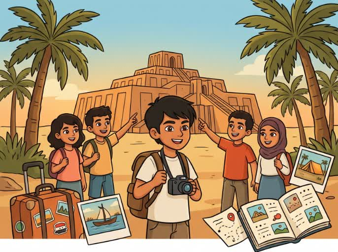
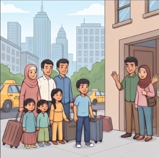
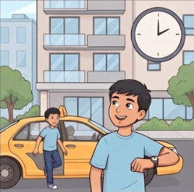
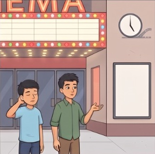

المنهج التفاعلي الحديث للمدارس العراقية
استمع للقصص بأصوات أمريكية أصلية، وتدرّب على حلول كراس النشاط الرسمية خطوة بخطوة مع التصحيح الذكي الفوري.

استمع لمغامرات أحمد وفيصل مع قراءة متزامنة وترجمة تفاعلية عند الحاجة

“Ahmed lives in New York. One day he went to Central Park...”
يعيش أحمد في نيويورك. في أحد الأيام ذهب إلى سنترال بارك...

“Faisal was playing football with some boys.”
كان فيصل يلعب كرة القدم مع بعض الأولاد.

“They ate hot dogs and talked about Iraq.”
أكلوا شطائر الهوت دوغ وتحدثوا عن العراق الحبيب.
تمرين حقيقي على الكتابة اليدوية مع تصحيح ذكي وإظهار الحلول النموذجية
المنصة متاحة الآن مجاناً لجميع طلاب ومدرسي الأول متوسط في عموم العراق